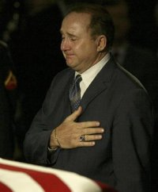

|
|
HOME
MY TRIBUTE GALLERY QUOTES SPEECHES MEMORIAL LINKS |
Son Michael Reagan Remarks, June 10, 2004

Good evening. I'm Mike Reagan. You knew my father as governor, as president. But I knew him as dad. I want to tell you a little bit about my dad. A little bit about Cameron and Ashley's grandfather because not a whole lot is ever spoken about that side of Ronald Reagan. Ronald Reagan adopted me into his family 1945. I was a chosen one. I was the lucky one. And all of his years, he never mentioned that I was adopted either behind my back or in front of me. I was his son, Michael Edward Reagan. When his families grew to be two families, he didn't walk away from the one to go to the other. But he became a father to both. To Patti and then Ronnie, but always to Maureen, my sister, and myself. We looked forward to those Saturday mornings when he would pick us up, sitting on the curve on Beverly Glen as his car would turn the corner from Sunset Boulevard and we would get in and ride to his ranch and play games and he would always make sure it ended up a tie. We would swim and we would ride horses or we'd just watch him cut firewood. We would be in awe of our father. As years went by and I became older and found a woman I would marry, Colleen, he sent me a letter about marriage and how important it was to be faithful to the woman you love with a P.S.: You'll never get in trouble if you say I love you at least once a day, and I'm sure he told Nancy every day "I love you" as I tell Colleen. He also sent letters to his grandchildren. He wasn't able to be the grandfather that many of you are able to be because of the job that he had. And so he would write letters. He sent one letter to Cameron, said: "Cameron, some guy got $10,000 for my signature. Maybe this letter will help you pay for your college education. He signed it, Grandpa. P.S. Your grandpa is the 40th president of the United States, Ronald Reagan. He just signed his sign." Those are the kinds of things my father did. At the early onset of Alzheimer's disease, my father and I would tell each other we loved each other and we would give each other a hug. As the years went by and he could no longer verbalize my name, he recognized me as the man who hugged him. So when I would walk into the house, he would be there in his chair opening up his arms for that hug, hello, and the hug goodbye. It was a blessing truly brought on by God. We had wonderful blessings of that nature. Wonderful, wonderful blessings that my father gave to me each and every day of my life. I was so proud to have the Reagan name and to be Ronald Reagan's son. What a great honor. He gave me a lot of gifts as a child. Gave me a horse. Gave me a car. Gave me a lot of things. But there's a gift he gave me that I think is wonderful for every father to give every son. Last Saturday, when my father opened his eyes for the last time, and visualized Nancy and gave her such a wonderful, wonderful gift. When he closed his eyes, that's when I realized the gift that he gave to me, the gift that he was going to be with his Lord and Savior, Jesus Christ. He had, back in 1988 on a flight from Washington, D.C. to Point Mugu, told me about his love of God, his love of Christ as his Savior. I didn't know then what it all meant. But I certainly, certainly know now. I can't think of a better gift for a father to give a son. And I hope to honor my father by giving my son Cameron and my daughter Ashley that very same gift he gave to me. Knowing where he is this very moment, this very day, that he is in Heaven, and I can only promise my father this. Dad, when I go, I will go to Heaven, too. And you and I and my sister, Maureen, that went before us, we will dance with the heavenly host of angels before the presence of God. We will do it melanoma and Alzheimer's free. Thank you for letting me share my father, Ronald Wilson Reagan. © 2004 The Associated Press. All rights reserved. This material may not be published, broadcast, rewritten or redistributed.


|
|
PRES BUSH EULOGY SR. BUSH EULOGY |
Web Site Copyright © 2004. All Rights Reserved. Web Site by Just-Fix-It Web Services |
MULRONEY EUOLGY THATCHER EULOGY |
 View My Guestbook
View My Guestbook
free hit counter